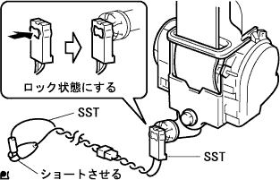
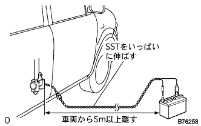
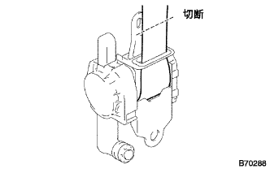
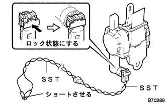
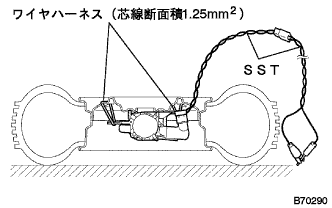
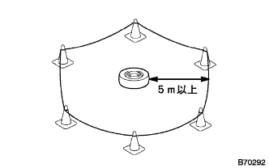

Front seat belt RH abolition |
| 1. Front sheet outa belt ASSY RH abandoned (abolished car) |
Handling / Work precautions (see the point)
Turn off the power (see the point)
Front doorskuff plate RH is removed
Front door opening trimweather strip RH removed
Remove the side No.1 trim ASSY RH.
Pretenseoner operation abolition method
Use a thin -blade flashed screwdriver with a protective tape, pull out the locking button to the front, unlock, and separate the connector.
 |
Short the crocodile mouth and terminals of SST.
|  |
Connect the SST to the pre -shinshona.
|  |
Stretch the SST from the vehicle, separate more than 5m from the vehicle and place a battery.
Confirm the safety of the room and surroundings, and connect the SST crocodile mouth to the negative battery.
Connect the SST terminal to the battery plus and activate the pritaineer.
| 2. Front sheet outa belt ASSY RH abolition (abolition alone) |
Handling / Work precautions (see the point)
Turn off the power (see the point)
Front doorskuff plate RH is removed
Front door opening trimweather strip RH removed
Remove the side No.1 trim ASSY RH.
Pretenseoner operation abolition method
Wrap the seat belt around the retractor.
Cut the seat belt at a position 10 cm from the retractor with the seat belt well wrapped.
|  |
Connect the following two SSTs and lock the connector holder.
|  |
Short the crocodile mouth and terminals of SST.
Connect the SST and lock the locking button.
|  |
Wire harness (core wire cross -sectional area 1.25mm)2Use the above to fix the connector on the disk wheel (about 185mm tire width) on the disk wheel (about 185mm width).
Pass the SST to the top of the tire.
 |
Stretch the SST all over the tires with wheels, separate more than 5m and put the battery.
Check the surrounding safety and connect the SST crocodile mouth to the negative of the battery.
|  |
Surround from the outside of the tire to a position with a radius of 5m or more with a pylon so that people do not enter.
Connect the SST terminal to the battery plus and activate the pritaineer.
Pretenseona abolition guidelines
 |
The activated Pretenseoner is sealed and eliminated in a durable and transparent plastic bag.